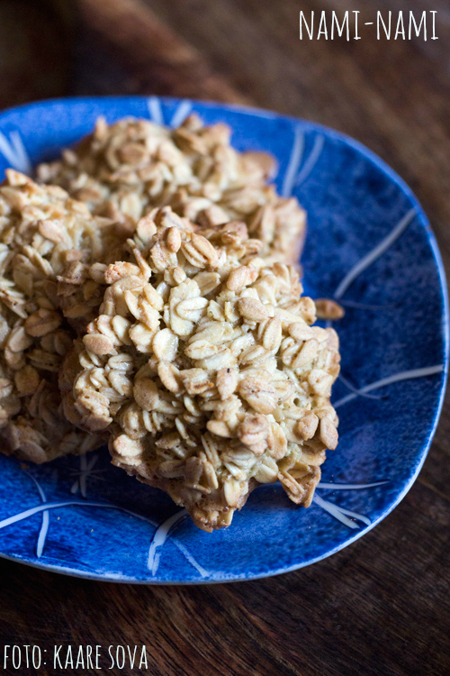

MÕNUSAD KAERAKÜPSISED

Koostisosad
| Koostisosa |
Kogus |
| kaerahelbed |
500g |
| muna |
4 tk |
| suhkur |
150g |
| sool |
näpuotsa täis |
| sulatatud või |
150g |
| vanilliekstrakt |
1tl |
| rosinad |
100g |
Valmistamine
- Vahusta munad suhkruga kohevaks heledaks vahuks. Maitsesta vanilliekstraktiga, lisa sulavõi, kaerahelbed ja rosinad.
Sega hoolega, võimaluse korral lase umbes veerand tundi seista.
- Kata ahjuplaat küpsetuspaberiga. Tõsta supilusikaga tainaportsud ahjuplaadile ning küpseta 180kraadises ahjus umbes 12 minutit, kuni küpsised on helepruunid. Lase veidi jahtuda, siis tõsta küpsised ettevaatlikult alusele.
|
Retsepti allikas
|